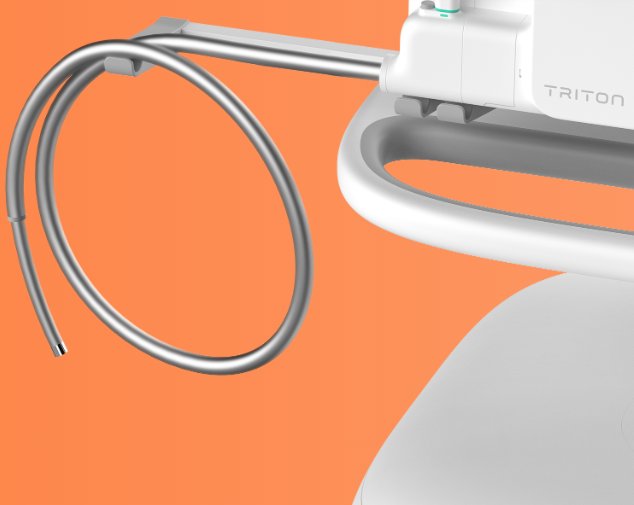
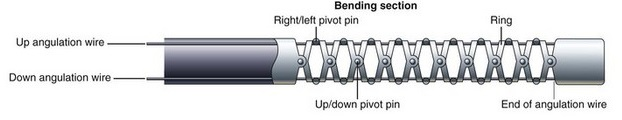
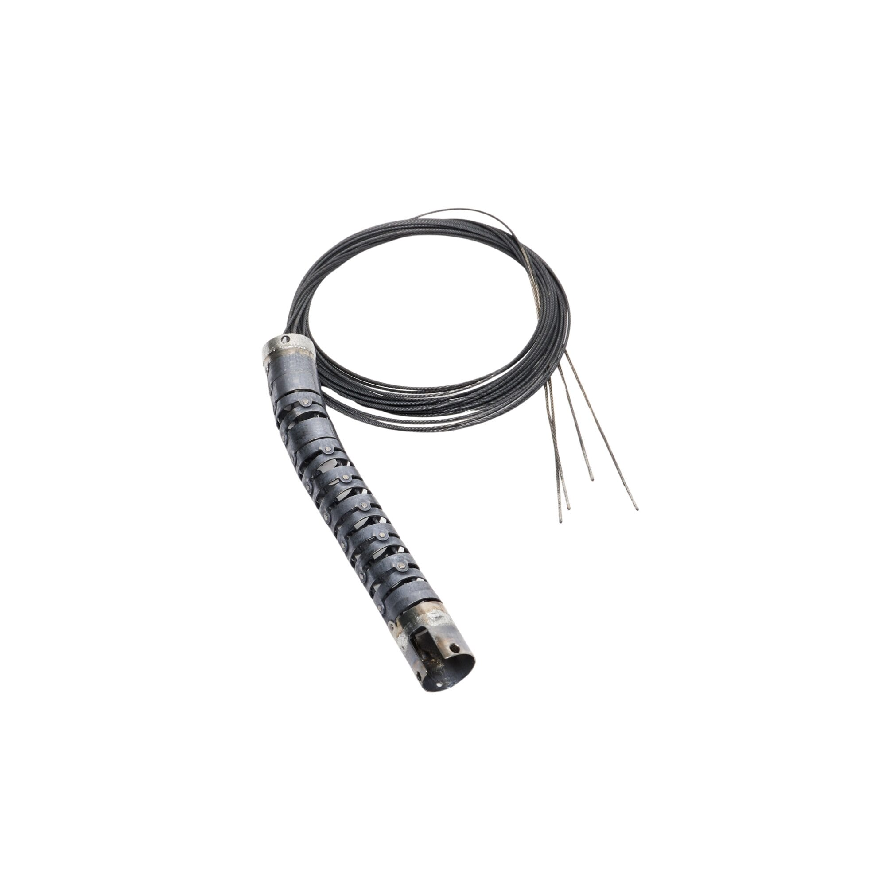
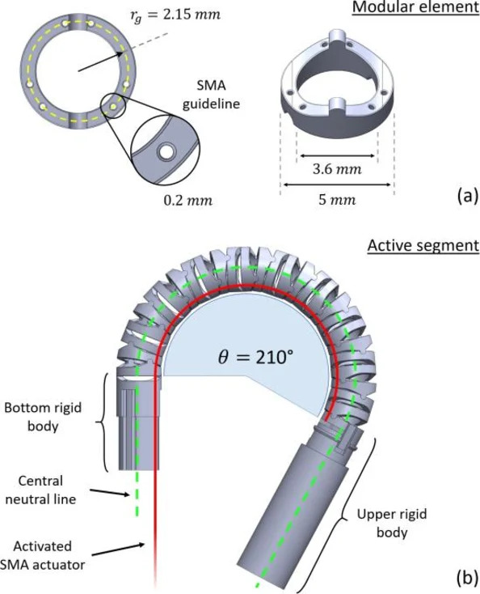

Robotic Colonoscopy
Owning end-to-end mechanical design and integration in a flexible robotic platform for colonoscopy

Overview
I own mechanical design for a finger-like articulation subsystem on a flexible robotic platform, including tendon-driven actuation, mechanism design actuator design, and soft goods integration.
Highlights
- Technical lead for a 5-engineer team developing a next generation finger-like tendon-actuated articulation mechanism for a medical robot platform. Led mechanical CAD design, FEA, material selection, soft-good interfaces, coatings, DFM, and system validation, improving reliability 20x while reducing subsystem cost by 50% through a transition from machined to metal injection molded components.
- Designed tendon, routing, termination, low-friction coatings, actuation requirements, fixtures, and assembly documentation.
- Built Python analysis pipelines that turned robot logs into tools for characterizing design attributes and fed actuator design and reliability decisions.
- Developed 100+ fixtures and process tools for machined, molded, and soft goods components, many of which included electromechanical components, custom circuitry, and microcontrollers
Systems view
This work sat at the intersection of human robot interaction, clinical requirements, mechanical architecture, electrical compatibility, manufacturing reliability and design robustness, and on-robot workflows using ROS2, Ubuntu, etc.
First-in-human clinical trial press release!
More Images


